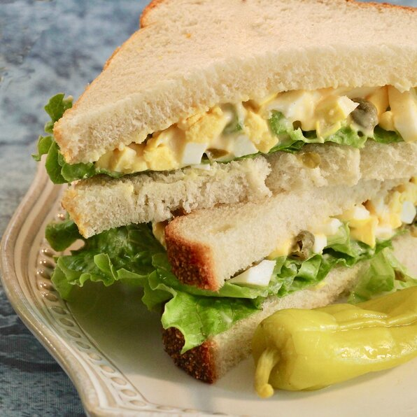

This here is a delectable masterpiece meant to tickle your tastebuds while giving you a blessedly full stomach - a pickled egg salad sandwich.
You can make this beaut' in a few simple steps. You start by taking two or four slices of wholewheat bread(per your preference), smear them with mayonnaise or margerine - I'd refer the mayo, Add a few greens of your choice followed by some spiced up pickled eggs. And, voila! You've got yourself a tasty sandwich with double the richness.
Ingredients:
Two slices of White Bread
Chutney and Hot Sauce
Two Pickles
Two hard-boiled Eggs
A few leaves of Lettuce
Three teaspoons of Mayonnaise
A bowl of Shredded Cheddar Cheese or Gouda Cheese
Steps:
Slice the boiled eggs and add them to the bowl of shredded cheese.
Mix some Chutney and Hot Sauce into the same bowl for a variety of flavors.
Toast the bread lightly, and spread mayonnaise on both sides.
Layer lettuce and tomato on one slice, followed by the spread of egg mixture on the other slice.
Add some Chilli Beef Aromat Spice to give it some zing.
Combine the slices and cut them into shapes of your choice - enjoy your tasty sandwich!